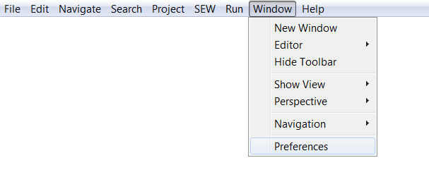
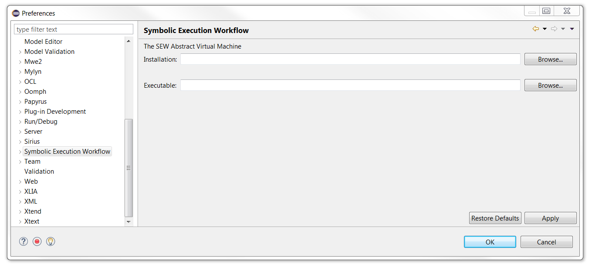
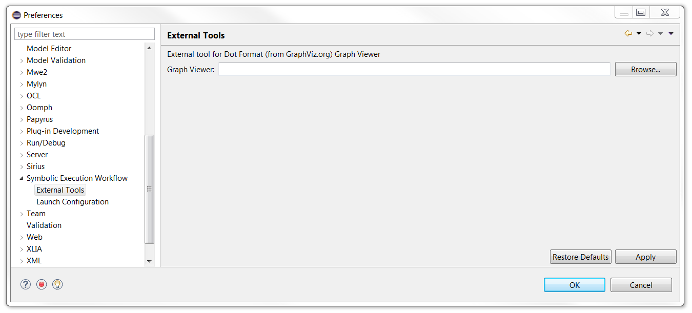
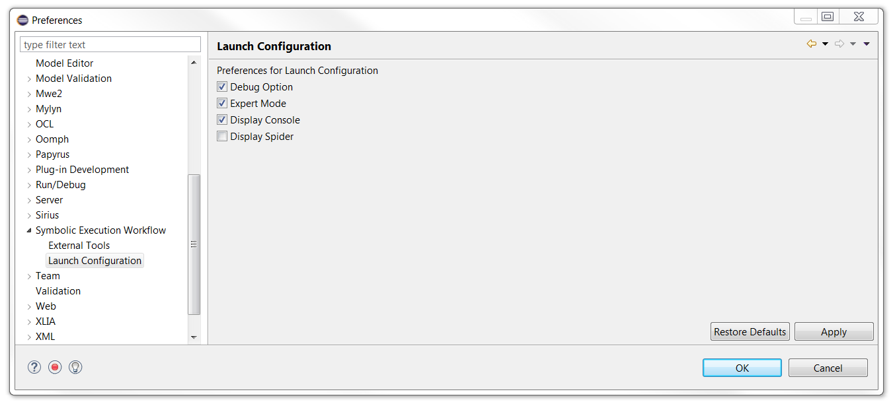

Several user choices can be configured for the use of the EFM Project. Those preferences are to be found in Eclipse's menu bar as shown below :
You can have access to the preferences concerning the EFM Project in the "Symbolic Execution Workflow" section as seen below.
The main "Symbolic Execution Workflow" page allows the user to configure the paths where Eclipse can find the symbolic engine executables.
The "External Tools" page allows the user to configure the path where Eclipse can find specific tools such as the graph viewer used to open ".gv" files that can be generated (see Debug Tab).
The "Launch Configuration" page allows the user to add or remove some of the tabs of the Run Configurations dialog, as well as other widgets.
